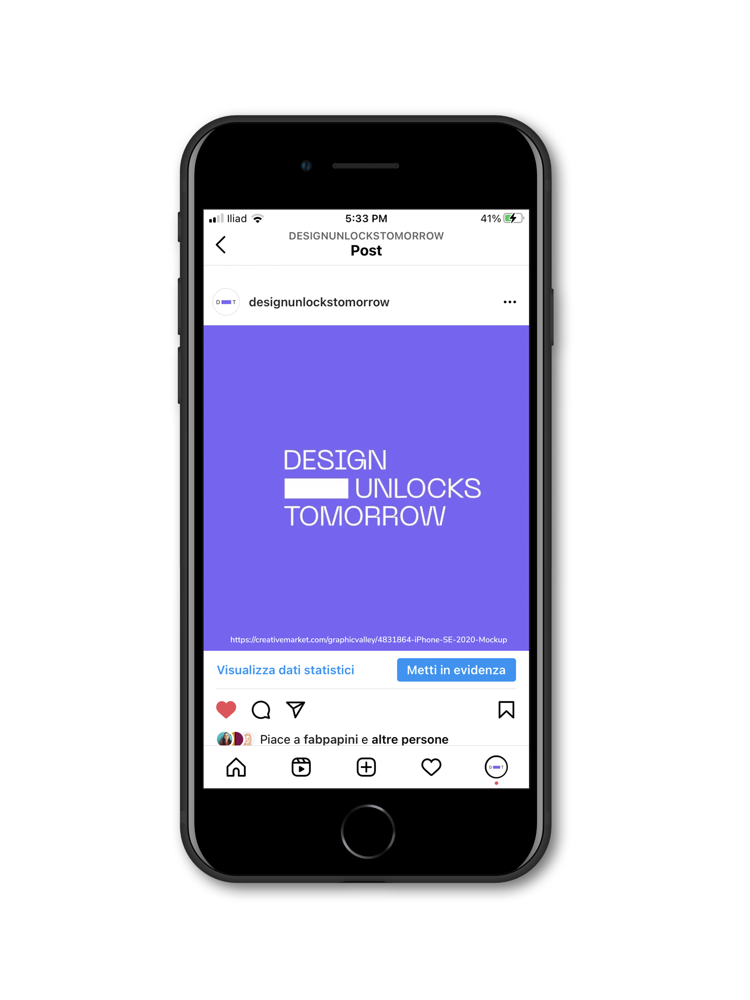
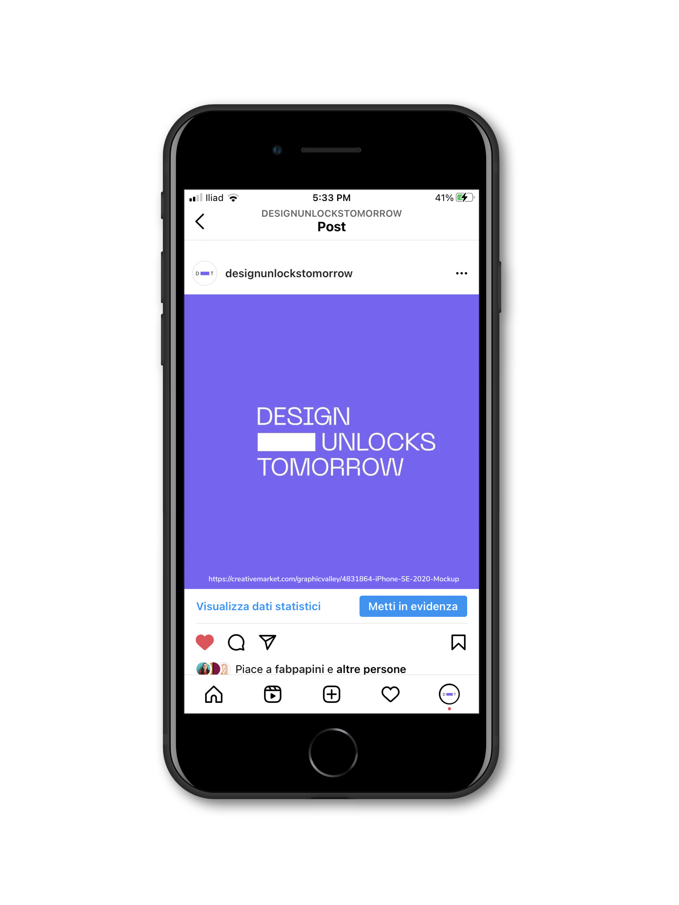

Design Unlocks Tomorrow
This virtual exhibition is a collection of projects born during the lockdown, imagining digital services that can open new perspectives and connections within the city. All the ideas on display are inspired by the critical issues that emerged during the emergency, seen as an opportunity to reflect on the evolution of the urban context and promote a sense of belonging, mutual support and a more sustainable lifestyle.
At a time when the entire population was facing a situation of forced segregation, we wondered what digital services could help to manage and overcome the emerging difficulties. The reflection involves individuals and their need to rebuild a routine in the new normality. The community with the need to rethink sharing. Sociality while respecting new practices. And finally the whole city and the importance of protecting the most vulnerable, ensuring a peaceful and safe life for all its inhabitants.
The projects on display are carried out by students from the Interaction Design Laboratory of the Politecnico di Milano, Faculty of Design.
The laboratory combines design and technology skills, with the aim of teaching how to imagine and prototype digital services based on a deep knowledge of future users and their behaviour.
All the services on display come from an initial ethnographic research activity. The user experience is designed in detail, accompanying the project with interactive prototypes of the different devices involved and a showcase site developed
in HTML.
Role: WEB DESIGN / FRONT END
Exhibition Design |
October 2020 |
Professional Project |
Website / Instagram campaign / Physical event |
 
